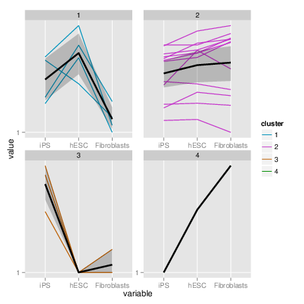
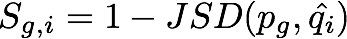
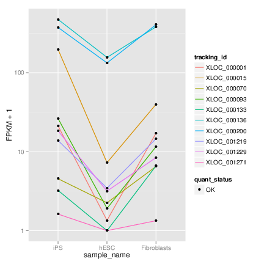

Site Map
News and updates
| New releases and related tools will be announced through the mailing list |
Getting Help
| Questions about CummeRbund should be sent to lgoff@csail.mit.edu. |
Releases
Stable Version (tied to Bioconductor release cycle)
| version 2.0.0 (BioC 2.11) | 10/2/2012 |
| Package Source | |
| Mac OS X binary | |
| Windows binary |
Previous Releases
| version 1.2.0 (BioC 2.10) | 4/12/2012 |
* CummeRbund is now included as part of the R/Bioconductor project. The links above point to the R packages directly, and every effort should be made to use the version provided by Bioconductor as it will ensure compatibility with other Bioconductor packages. Easy installation instructions (with dependencies) can be found here.
Related Tools
Contributors
Links
v1.1.3 -- February 19, 2012
Contents
1 Requirements
2 Introduction
3 CummeRbund Classes
3.1 CuffSet Class
3.2 CuffData Class
3.3 CuffDist Class
3.4 CuffFeatureSet Class
3.5 CuffFeature Class
4 Reading cuffdiff output
4.1 Adding additional feature annotation
5 Global statistics
6 Accessing Data
6.1 Writing your own SQL accessors
7 Creating Gene Sets
7.1 Geneset level plots
8 Individual Genes
8.1 Gene-level plots
9 Data Exploration
9.1 Creating gene sets from significantly regulated genes
9.2 Partitioning
9.3 Specificity
9.4 Finding similar genes
10 Miscellaneous
11 Known Issues
12 Session info
1 Requirements
- Cufflinks ≥ v1.1.0 (Note: as of the release of this package, the current version of cufflinks is 1.3.3. While this package will work with >v1.1, we recommend updating your cufflinks prior to using cummeRbund)
- R ≥ v2.7.0
- Packages:
- RSQLite
- ggplot2
- reshape2
- plyr
- RSQLite
2 Introduction
cummeRbund is a visualization package for Cufflinks high-throughput sequencing data. The base class, cuffSet is a 'pointer' to cufflinks data that are stored out-of-memory in a sqlite database.
3 CummeRbund Classes
3.1 CuffSet Class
A pointer class to control access to the sqlite tables holding the Cufflinks data. The primary slot is DB which contains the RSQLite connection object. This can be accessed using the DB() accessor. The additional slots (genes, isoforms, TSS, and CDS) are each instances of the CuffData class and are pointers to sets of tables for each data subtype. They can be accessed with similar accessor wrappers. This is the default class created by readCufflinks. By default, CuffData accessor methods applied to a CuffSet class will operate on the 'genes' slot.
3.2 CuffData Class
The CuffData class is also a pointer class to the SQL backend, but each instance is specific for a data subtype (genes, isoforms, TSS, CDS). Again, there is an DB slot (accessible using DB()) that contains the RSQLite connection object. There are several accessor, setter, and plotting methods that allow for global analysis of all features within a CuffData class.Subsetting is currently being re-written, however, it is primarily done through the 'gene_id' field. Available slots for the CuffData class are:- DB: RSQLite connection object
- tables: A list of tables in the SQLite DB that contain the cufflinks data.
- filters: A list of filters for subsetting (not implemented yet).
- type: A character field describing the data (ie. 'genes','isoforms','TSS','CDS','other')
- idField: The name of the identifying index field for this object (eg. 'gene_id' for type='gene', or 'isoform_id' for type='isoform')
Making the best use of either the CuffSet or CuffData classes will enable you to keep the entire dataset out of memory and significantly improve performance for large cufflinks datasets.
3.3 CuffDist Class
The CuffDist class is an pointer class that contains the results of the various 'distribution tests' performed by cuffdiff. These include differential promoter usage, differential splicing, and differential CDS usage. These are independent tests from the differential analysis of gene-, isoform-, TSS-, and CDS-level features and therefore have their own container type to distinguish them as such. The 'promoters', 'relCDS', and 'splicing' slots of a CuffSet class are all CuffDist instances. Available slots for the CuffDist class are:- DB: RSQLite connection object
- tables: A list of tables in the SQLite DB that contain the distribution test data.
- type: A character field describing the data (ie. 'promoters','relCDS','splicing')
- idField: The name of the identifying index field for this object (eg. 'TSS_group_id' for type='promoters', or 'CDS_id' for type='relCDS', etc.)
3.4 CuffFeatureSet Class
The CuffFeatureSet class is a data-storage container that holds all available data for a pre-determined list of features. Slots for FPKM data, differential regulation data, and feature-level annotation are all available. Unlike the previous classes, this class contains no connection information to the SQL database, but rather contains several slots with data.frame objects storing multiple-features worth of information. There are available accessors, and plotting methods that are designed to present multiple-features worth of information (eg. heatmaps, scatterplots, etc) Available slots for a CuffFeatureSet object include:- annotation: Holds all feature-level annotation information for all features in object.
- fpkm: A data frame of FPKM data across all samples, for all features in object.
- diff: A data frame of differential expression/regulation data for all features in object.
- ids: A 'character' list of all gene_ids used in object.
- isoforms: A CuffFeatureSet object for all isoforms of genes in object.
- TSS: A CuffFeatureSet object for all TSS of genes in object.
- CDS: A CuffFeatureSet object for all CDS of genes in object.
3.5 CuffFeature Class
The CuffFeature class is designed for single-feature-level data analysis and plotting. The methods available for this object are designed to analyze or visualize information about a specific feature. This is a 'data' object, as opposed to a 'pointer' object to the database backend. There is a validity requirement that a CuffFeature object only point to data from a single feature. Available slots for a CuffFeature object include:- annotation: Holds feature-level annotation information for a given feature.
- fpkm: A data frame of FPKM data across all samples for a given feature.
- diff: A data frame of differential expression/regulation data for a given feature.
- id: The common 'gene_id' for all data in object
- isoforms: A CuffFeature object for all isoforms of a given gene.
- TSS: A CuffFeature object for all TSS of a given gene.
- CDS: A CuffFeature object for all CDS of a given gene.
4 Reading cuffdiff output
cummeRbund was designed to process the multi-file output format for a 'cuffdiff' differential expression analysis. In this type of analysis, a user will use a reference .gtf file (either known annotation or a .gtf file created from a cufflinks assembly or merge of assemblies) and quantitate the expression values and differential regulation of the annotation(s) in the .gtf file across two or more SAM/BAM files. By design, cuffdiff produces a number of output files that contain test results for changes in expression at the level of transcripts, primary transcripts, and genes. It also tracks changes in the relative abundance of transcripts sharing a common transcription start site, and in the relative abundances of the primary transcripts of each gene. Tracking the former allows one to see changes in splicing, and the latter lets one see changes in relative promoter use within a gene.Note:Early versions of Cuffdiff required that transcripts in the input GTF be annotated with certain attributes in order to look for changes in primary transcript expression, splicing, coding output, and promoter use. This is no longer the case with >=v1.1.1 of cummeRbund, however we still recommend the use of both the following attributes in your GTF file to enable all downstream features of cummeRbund.
These attributes are:
- tss_id: The ID of this transcript's inferred start site. Determines which primary transcript this processed transcript is believed to come from. Cuffcompare appends this attribute to every transcript reported in the .combined.gtf file.
- p_id The ID of the coding sequence this transcript contains. This attribute is attached by Cuffcompare to the .combined.gtf records only when it is run with a reference annotation that include CDS records. Further, differential CDS analysis is only performed when all isoforms of a gene have p_id attributes, because neither Cufflinks nor Cuffcompare attempt to assign an open reading frame to transcripts.
There are four FPKM tracking files:
- isoforms.fpkm_tracking Transcript FPKMs
- genes.fpkm_tracking Gene FPKMs. Tracks the summed FPKM of transcripts sharing each gene_id
- cds.fpkm_tracking Coding sequence FPKMs. Tracks the summed FPKM of transcripts sharing each p_id, independent of tss_id
- tss_groups.fpkm_tracking Primary transcript FPKMs. Tracks the summed FPKM of transcripts sharing each tss_id
Four .diff files are created:
- isoform_exp.diff Transcript differential FPKM.
- gene_exp.diff Gene differential FPKM. Tests difference sin the summed FPKM of transcripts sharing each gene_id
- tss_group_exp.diff Primary transcript differential FPKM. Tests differences in the summed FPKM of transcripts sharing each tss_id
- cds_exp.diff Coding sequence differential FPKM. Tests differences in the summed FPKM of transcripts sharing each p_id independent of tss_id
- splicing.diff Differential splicing tests.
- CDS.diff Differential coding output.
- promoters.diff Differential promoter use.
One of the principle benefits of using cummeRbund is that data are stored in a SQLite database. This allows for out-of-memory analysis of data, quick retrieval, and only a one-time cost to setup the tables. By default, cummeRbund assumes that all output files from cuffdiff are in the current working directory. To read these files, populate the 'cuffData.db' database backend, and return the CuffSet pointer object, you can do the following.
> library(cummeRbund)
> cuff <- readCufflinks(dir = system.file("extdata",
+ package = "cummeRbund"))
> cuff
CuffSet instance with: 3 samples 400 genes 1203 isoforms 575 TSS 545 CDS 960 promoters 1725 splicing 696 relCDS
Again, by default dir is assumed to be the current working directory and cuff<-readCufflinks() should work if all appropriate files are in the current working directory. Should you need to rebuild the SQLite backend for any reason, you can add the option rebuild=T to readCufflinks. Once the database is created, readCufflinks will default to using the SQL backend and should not need to rebuild this database. Each R session should begin with a call to readCufflinks so as to initialize the database connection and create an object with the appropriate RSQLite connection information.
4.1 Adding additional feature annotation
Gene- or feature-level annotation can be permanently added to the database tables for future querying. If you have a data.frame where the first column contains the 'tracking_id' (eg. 'gene_id' for genes, 'isoform_id' for isoforms, etc). You can easily add feature level annotation using the addFeatures() function: By default, features added to a CuffSet object are assumed to be gene-level annotations, but the level can selected using the argument level. Features added to a CuffData object are assumed to be of the same type as the 'type' value for that given object (e.g. gene-level features for 'genes', isoform-level features for isoforms, etc.)
5 Global statistics
Several plotting methods are available that allow for quality-control or global analysis of cufflinks data. For example, to assess the distributions of FPKM scores across samples, you can use the csDensity plot (Figure 1).> dens <- csDensity(genes(cuff)) > densBoxplots can be visualized using the csBoxplot method (Figure 2).

> b <- csBoxplot(genes(cuff)) > bPairwise comparisons can be made by using csScatter. You must specify the sample names to use for the x and y axes:

> s <- csScatter(genes(cuff), "hESC", "Fibroblasts", + smooth = T) > sVolcano plots are also available for the CuffData objects. Again, you must specify the comparisons by sample name.

> v <- csVolcano(genes(cuff), "hESC", "Fibroblasts") > v

6 Accessing Data
Feature-level information can be accessed directly from a CuffData object using the fpkm, diffData, or features methods:> gene.features <- features(genes(cuff)) > head(gene.features)
gene_id class_code nearest_ref_id gene_short_name
1 XLOC_000001 <NA> <NA> <NA>
2 XLOC_000002 <NA> <NA> OR4F5
3 XLOC_000003 <NA> <NA> <NA>
4 XLOC_000004 <NA> <NA> <NA>
5 XLOC_000005 <NA> <NA> <NA>
6 XLOC_000006 <NA> <NA> OR4F16
locus length coverage gene_id
1 chr1:11873-29961 NA NA <NA>
2 chr1:69090-70008 NA NA <NA>
3 chr1:321083-321114 NA NA <NA>
4 chr1:321145-321223 NA NA <NA>
5 chr1:322036-328580 NA NA <NA>
6 chr1:367658-368595 NA NA <NA>
> gene.fpkm <- fpkm(genes(cuff)) > head(gene.fpkm)
gene_id sample_name fpkm conf_hi conf_lo
1 XLOC_000001 Fibroblasts 16.401100 428.14700 0
2 XLOC_000001 hESC 0.723836 3.01108 0
3 XLOC_000001 iPS 54.067200 1402.31000 0
4 XLOC_000002 Fibroblasts 0.000000 0.00000 0
5 XLOC_000002 hESC 0.000000 0.00000 0
6 XLOC_000002 iPS 0.000000 0.00000 0
quant_status
1 LOWDATA
2 OK
3 LOWDATA
4 OK
5 OK
6 OK
> isoform.fpkm <- fpkm(isoforms(cuff)) > head(isoform.fpkm)
isoform_id sample_name fpkm conf_hi conf_lo
1 TCONS_00000001 Fibroblasts 11.910700 19.96650 3.85498
2 TCONS_00000001 hESC 0.000000 0.00000 0.00000
3 TCONS_00000001 iPS 9.563700 23.68410 0.00000
4 TCONS_00000002 Fibroblasts 0.000000 8.55378 0.00000
5 TCONS_00000002 hESC 0.723836 3.01108 0.00000
6 TCONS_00000002 iPS 32.934400 47.93760 17.93130
quant_status
1 OK
2 OK
3 LOWDATA
4 OK
5 OK
6 OK
> gene.diff <- diffData(genes(cuff)) > head(gene.diff)
gene_id sample_1 sample_2 status value_1 value_2
1 XLOC_000001 hESC Fibroblasts OK 7.23836e-01 16.4011
2 XLOC_000002 hESC Fibroblasts NOTEST 0.00000e+00 0.0000
3 XLOC_000003 hESC Fibroblasts NOTEST 0.00000e+00 0.0000
4 XLOC_000004 hESC Fibroblasts OK 1.20000e+06 22616.4000
5 XLOC_000005 hESC Fibroblasts OK 1.13903e+03 41.1644
6 XLOC_000006 hESC Fibroblasts NOTEST 0.00000e+00 0.0000
log2_fold_change test_stat p_value q_value significant
1 4.50198 -0.246654 0.805176 0.893616 no
2 0.00000 0.000000 1.000000 1.000000 no
3 0.00000 0.000000 1.000000 1.000000 no
4 -5.72952 1.310270 0.190105 0.300329 no
5 -4.79027 10.857600 0.000000 0.000000 yes
6 0.00000 0.000000 1.000000 1.000000 no
Vectors of sample names and feature names are available by using the samples and featureNames methods:
> sample.names <- samples(genes(cuff)) > head(sample.names)
[1] "hESC" "Fibroblasts" "iPS"
> gene.featurenames <- featureNames(genes(cuff)) > head(gene.featurenames)
[1] "XLOC_000001" "XLOC_000002" "XLOC_000003" "XLOC_000004" [5] "XLOC_000005" "XLOC_000006"To facilitate Bioconductor-like operations, an 'FPKM-matrix' can be returned easily using the fpkmMatrix method:
> gene.matrix <- fpkmMatrix(genes(cuff)) > head(gene.matrix)
hESC Fibroblasts iPS
XLOC_000001 7.23836e-01 16.4011 54.06720
XLOC_000002 0.00000e+00 0.0000 0.00000
XLOC_000003 0.00000e+00 0.0000 0.00000
XLOC_000004 1.20000e+06 22616.4000 0.00000
XLOC_000005 1.13903e+03 41.1644 944.30800
XLOC_000006 0.00000e+00 0.0000 9.00455
6.1 Writing your own SQL accessors
Since the cuffData.db is a SQLite database backend, if you are familiar with SQL and/or RSQLite query construction, you can simply design your own SQL queries to access the data that you are after.7 Creating Gene Sets
Gene Sets (stored in a CuffGeneSet object) can be created using the getGenes method on a CuffSet object. You must first create a vector of 'gene_id' or 'gene_short_name' values to identify the genes you wish to select:> data(sampleData) > myGeneIds <- sampleIDs > myGeneIds
[1] "XLOC_001363" "XLOC_001297" "XLOC_001339" "XLOC_000132" [5] "XLOC_001265" "XLOC_000151" "XLOC_001359" "XLOC_000069" [9] "XLOC_000170" "XLOC_000105" "XLOC_001262" "XLOC_001348" [13] "XLOC_001411" "XLOC_001369" "XLOC_000158" "XLOC_001370" [17] "XLOC_001263" "XLOC_000115" "XLOC_000089" "XLOC_001240"
> myGenes <- getGenes(cuff, myGeneIds) > myGenes
CuffGeneSet instance for 20 genes Slots: annotation fpkm diff isoforms CuffFeatureSet instance of size 45 TSS CuffFeatureSet instance of size 18 CDS CuffFeatureSet instance of size 31 promoters CuffFeatureSet instance of size 20 splicing CuffFeatureSet instance of size 18 relCDS CuffFeatureSet instance of size 20
The same fpkm, fpkmMatrix, features, diffData, samples, and featureNames are available for instances of the CuffGeneSet class, but additional accessor methods are available for the promoters,relCDS, and splicing slot data as well.
7.1 Geneset level plots
There are several plotting functions available for gene-set-level visualization: The csHeatmap() function is a plotting wrapper that takes as input either a CuffGeneSet or a CuffFeatureSet object (essentially a collection of genes and/or features) and produces a heatmap of FPKM expression values. The 'cluster' argument can be used to re-order either 'row', 'column', or 'both' dimensions of this matrix. By default, the Jensen-Shannon distance is used as the clustering metric, however, any function that produces a dist object can be passed to the 'cluster' argument as well.> h <- csHeatmap(myGenes, cluster = "both") > h

> b <- expressionBarplot(myGenes) > bThe csScatter() method can be used to produce scatter plot comparisons between any two conditions.
> s <- csScatter(myGenes, "Fibroblasts", "hESC", smooth = T) > sThe volcano plot is a useful visualization to compare fold change between any two conditions and significance (-log P-values).

> v <- csVolcano(myGenes, "Fibroblasts", "hESC") > vSimilar plots can be made for all sub-level features of a CuffGeneSet class by specifying which slot you would like to plot (eg. isoforms(myGenes),TSS(myGenes),CDS(myGenes)).

> ih <- csHeatmap(isoforms(myGenes), cluster = "both", + labRow = F) > ih

> den <- csDendro(myGenes)

8 Individual Genes
An individual CuffGene object can be created by using the getGene function for a given 'gene_id' or 'gene_short_name'.> myGeneId <- "PINK1" > myGene <- getGene(cuff, myGeneId) > myGene
CuffGene instance for gene PINK1 Short name: PINK1 Slots: annotation fpkm diff isoforms CuffFeature instance of size 2 TSS CuffFeature instance of size 2 CDS CuffFeature instance of size 2
> head(fpkm(myGene))
gene_id sample_name fpkm conf_hi conf_lo
1 XLOC_000172 Fibroblasts 2919.340 4002.960 1835.730
2 XLOC_000172 hESC 693.465 813.869 573.062
3 XLOC_000172 iPS 1598.040 2282.380 913.710
quant_status
1 OK
2 OK
3 OK
> head(fpkm(isoforms(myGene)))
isoform_id sample_name fpkm conf_hi conf_lo
1 TCONS_00000480 Fibroblasts 2101.640 3111.330 1091.9400
2 TCONS_00000481 Fibroblasts 817.704 1391.700 243.7120
3 TCONS_00000480 hESC 573.512 668.688 478.3370
4 TCONS_00000481 hESC 119.953 152.675 87.2311
5 TCONS_00000480 iPS 1598.040 2282.380 913.7100
6 TCONS_00000481 iPS 0.000 0.000 0.0000
quant_status
1 OK
2 OK
3 OK
4 OK
5 OK
6 OK
8.1 Gene-level plots
> gl <- expressionPlot(myGene) > gl

> gb <- expressionBarplot(myGene) > gb

> igb <- expressionBarplot(isoforms(myGene)) > igb
9 Data Exploration
The cummeRbund package is more than just a visualization tool as well. We are working to implement several different means of data exploration from gene and condition clustering, finding features with similar expression profiles, as well as incorporating Gene Ontology analysis.
9.1 Creating gene sets from significantly regulated genes
One of the primary roles of a differential expression analysis is to conduct significance tests on each feature (genes, isoforms, TSS, and CDS) for appropriate pairwise comparisons of conditions. The results of these tests (after multiple testing correction of course) can be used to determine which genes are differentially regulated. cummeRbund makes accessing the results of these significance tests simple via getSig(). This function takes a CuffSet object and will scan at various feature levels ('genes' by default) to produce a vector of feature IDs. By default getSig() outputs a vector of tracking IDs corresponding to all genes that reject the null hypothesis in any condition tested. The default feature type can be changed by adjusting the 'level' argument to getSig(). In addition, a alpha value can be provided on which to filter the resulting list (the default is 0.05 to match the default of cuffdiff).> mySigGenes <- getSig(cuff, alpha = 0.05, level = "genes") > head(mySigGenes)
[1] "XLOC_000005" "XLOC_000014" "XLOC_000015" "XLOC_000016" [5] "XLOC_000018" "XLOC_000025"
> length(mySigGenes)
[1] 220By default getSig() outputs a vector of tracking IDs corresponding to all genes that reject the null hypothesis in any condition tested. The default feature type can be changed by adjusting the 'level' argument to getSig(). In addition, a alpha value can be provided on which to filter the resulting list (the default is 0.05 to match the default of cuffdiff). Significance results for specific pairwise comparisons can be retrieved as well by specifying the two conditions as 'x' and 'y'. In this case, p-values are adjusted to reduce the impact of multiple-testing correction when only one set of tests is being conducted.
> hESC_vs_iPS.sigIsoforms <- getSig(cuff, x = "hESC", + y = "iPS", alpha = 0.05, level = "isoforms") > head(hESC_vs_iPS.sigIsoforms)
[1] "TCONS_00000006" "TCONS_00000018" "TCONS_00000034" [4] "TCONS_00000041" "TCONS_00000043" "TCONS_00000048"
> length(hESC_vs_iPS.sigIsoforms)
[1] 247The values returned for each level of this list can be used as an argument to getGenes, to create a CuffGeneSet object of significantly regulated genes (or features). Alternatively, you can use the getSigTable() method to return a full test-table of 'significant features' x 'pairwise tests' for all comparisons. Only features in which the null hypothesis can be rejected in at least one test are reported.
> mySigTable <- getSigTable(cuff, alpha = 0.01, level = "genes") > head(mySigTable, 20)
gene_id FibroblastsvsiPS hESCvsFibroblasts hESCvsiPS
3 XLOC_000005 1 1 0
6 XLOC_000014 1 1 0
7 XLOC_000015 1 0 1
8 XLOC_000016 0 1 1
11 XLOC_000019 1 0 1
14 XLOC_000025 0 1 1
15 XLOC_000026 0 1 0
17 XLOC_000029 0 1 0
20 XLOC_000032 NA 1 0
22 XLOC_000034 0 1 1
23 XLOC_000035 0 1 0
30 XLOC_000043 0 1 0
31 XLOC_000044 1 1 0
35 XLOC_000048 0 1 0
37 XLOC_000050 1 1 0
39 XLOC_000054 1 1 0
40 XLOC_000055 0 1 0
45 XLOC_000060 0 1 0
46 XLOC_000063 1 1 0
47 XLOC_000064 1 1 1
9.2 Partitioning
K-means clustering is a useful tool that can be helpful in identifying clusters of genes with similar expression profiles. In fact, these profiles are learned from the data during the clustering. csCluster() uses the pam() method from the clustering package to perform the partitioning around medoids. In this case however, the distance metric used by default is the Jensen-Shannon distance instead of the default Euclidean distance. Prior to performing this particular partitioning, the user must choose the number of clusters (K) into which the expression profiles should be divided.> ic <- csCluster(myGenes, k = 4) > head(ic$cluster)
XLOC_000069 XLOC_000089 XLOC_000105 XLOC_000115 XLOC_000132
1 2 2 3 2
XLOC_000151
4
As of v1.1.1 of cummeRbund, the output of csCluster is a modified pam object. This replaces the default plotting behavior of the original csCluster plot to allow for further analysis of the clustering results. The original plotting behavior has been recapitulated
in the csClusterPlot() method.
> icp <- csClusterPlot(ic) > icp

9.3 Specificity
In some cases, a researcher may be interested in identifying features that are 'condition-specific'. Or, more likely, producing an ordered list of genes based on their specificity for a given condition. We define a specificity score (S) as the following:
|  | (1) |
> myGenes.spec <- csSpecificity(myGenes) > head(myGenes.spec)
hESC_spec Fibroblasts_spec iPS_spec
XLOC_000069 0.7235320 0.4762355 0.6539797
XLOC_000089 0.6339018 0.6338870 0.6167502
XLOC_000105 0.6246540 0.6337900 0.6261973
XLOC_000115 0.4513380 0.4513380 1.0000000
XLOC_000132 0.6216916 0.6390527 0.6238131
XLOC_000151 0.6233090 0.5276278 0.7208011
S=1.0 if the feature is expressed exclusively in that condition. The findSimilar() method outlined below is another method that can be used to identify genes based on specificity but has the added feature that you can determine similarity to a more complex q expression profile.
9.4 Finding similar genes
Another common question in large-scale gene expression analyses is 'How can I find genes with similar expression profiles to gene x?'. We have implemented a method, findSimilar to allow you to identify a fixed number of the most similar genes to a given gene of interest. For example, if you wanted to find the 20 genes most similar to "PINK1", you could do the following:> mySimilar <- findSimilar(cuff, "PINK1", n = 20) > mySimilar.expression <- expressionPlot(mySimilar, + logMode = T, showErrorbars = F)
> myProfile <- c(500, 0, 400) > mySimilar2 <- findSimilar(cuff, myProfile, n = 10) > mySimilar2.expression <- expressionPlot(mySimilar2, + logMode = T, showErrorbars = F) 
findSimilar() also uses the Jensen-Shannon distance between the probability distributions of each gene across conditions to determine the similarity. We have found this to be a more robust way to determine distance between genes using the high dynamic range of FPKM data. Future versions may allow for other dissimilarity measures to be used instead.
10 Miscellaneous
- As of v1.1.3 we attempt to provide new visual cues in most plots that will indicate the quantification status for a particular feature in each given condition. We have enabled this feature by default for most
plots to suggest a measure of reliability for each feature in a particular condition. In most cases, this feature can be disabled by setting 'showStatus=FALSE'.
- All plotting functions return ggplot objects and the resulting objects can be manipulated/faceted/altered using standard ggplot2 methods.
- There are occasional DB connectivity issues that arise. Not entirely sure why yet. If necessary, just readCufflinks again and this should solve connectivity issues with a new
RSQLite connection object. If connectivity continues to be a problem, try cuff<-readCufflinks(rebuild=T)
- I am still working on fully documenting each of the methods. There are a good number of arguments that exist, but might be hard to find without looking at the source.
11 Known Issues
- Large cuffdiff runs (e.g. ≥ 10 conditions) produce very large results files. These will take some time to parse and populate the cuffData.db sqlite database. While this is only a one time cost, the process can take a while. We are working on making the table writes and indexing significantly faster.
- Cuffdiff does not 'require' that gene_ids, isoform_ids, TSS_group_ids, or CDS_ids be unique in your reference gtf file. In fact, duplicate IDs will be aggregated by cummeRbund in the indexing phase and will produce undesireable effects. Please ensure that all of your IDs are unique prior to running cuffdiff (see cuffmerge for help) to avoid this issue.
12 Session info
> sessionInfo()
R version 2.13.1 (2011-07-08) Platform: x86_64-apple-darwin9.8.0/x86_64 (64-bit) locale: [1] en_US.utf-8/en_US.utf-8/C/C/en_US.utf-8/en_US.utf-8 attached base packages: [1] splines grid stats graphics grDevices utils [7] datasets methods base other attached packages: [1] Hmisc_3.9-1 survival_2.36-9 cluster_1.14.0 [4] cummeRbund_1.1.3 reshape2_1.2.1 ggplot2_0.8.9 [7] proto_0.3-9.2 reshape_0.8.4 plyr_1.6 [10] RSQLite_0.9-4 DBI_0.2-5 loaded via a namespace (and not attached): [1] digest_0.5.0 lattice_0.19-30 stringr_0.5 [4] tools_2.13.1
File translated from TEX by TTH, version 3.35.
On 18 Feb 2012, 14:06.